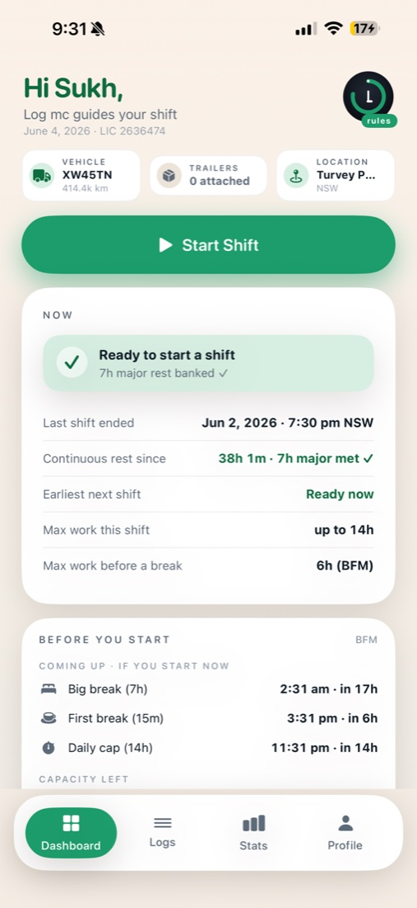
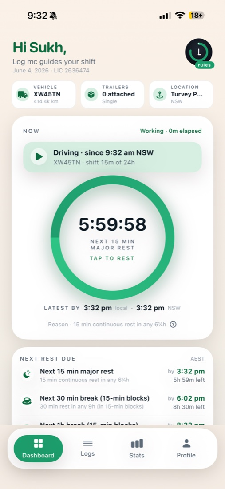
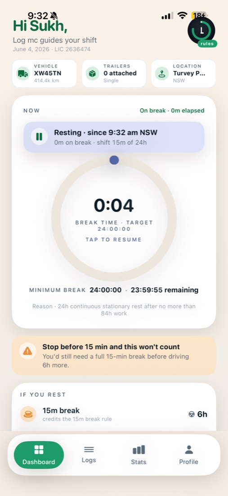
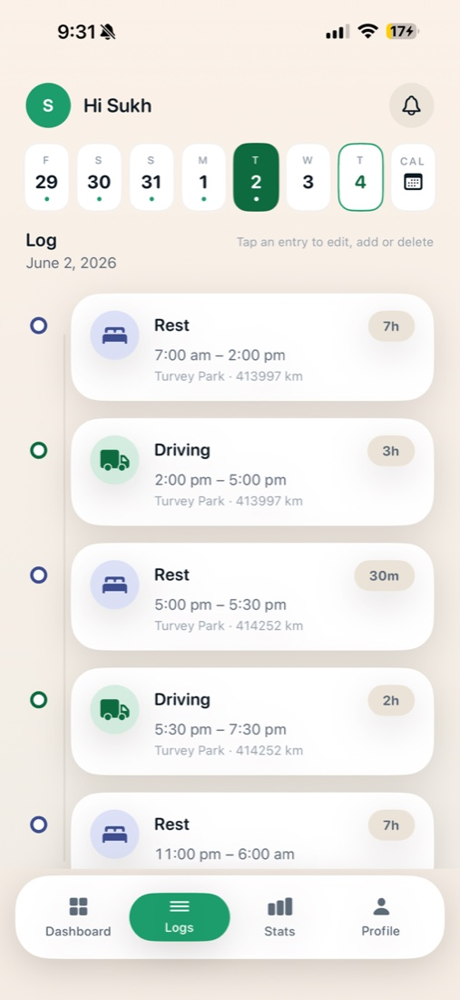
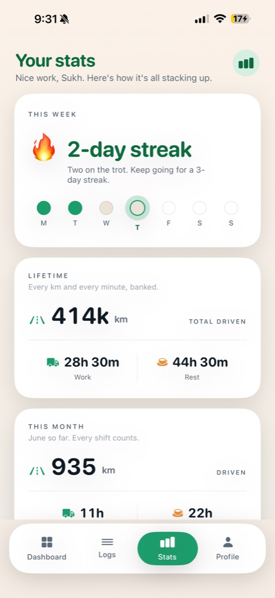
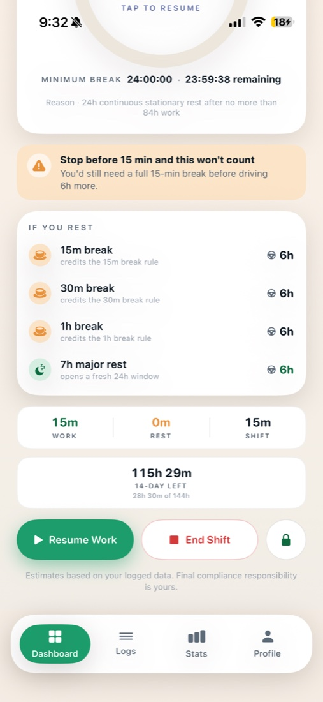

Join the Log mc beta
Your work & rest in plain words — when you can start, how long you can drive, and what a break buys back. Help us test the numbers and screens before launch.
An assistant — not a certified Electronic Work Diary. Keep using your normal logbook.
Inside the app
Swipe through the real dashboard.






The answers that matter
No spreadsheets, no guesswork — Log mc reads the rules so you don't have to.
One timer that matters
A single countdown for the tightest limit across every rule — and why.
What a break buys
See exactly how much drive time 15, 30 or 60 minutes earns back.
When can I start?
Before a shift, a clear countdown to when you can legally begin.
Your data, your iCloud
No ads, no trackers, no servers we can read. Your logbook stays yours.
How to join
Open this page on your iPhone, then follow along.
Install TestFlight
Get the free TestFlight app from the App Store.
Tap to join
Open testflight.apple.com/join/AcHAaD7c on your iPhone → Accept → Install Log mc.
Set up (30 seconds)
Open Log mc → Sign in with Apple → pick the rule set you drive under (Standard, BFM…) → confirm your home state.
Use it on your shift
Start Shift when you begin, tap to rest on breaks, and lock the screen for a big live timer while you drive.
Found something off? Tell us
A number that doesn't add up, a confusing screen, a crash — the most useful report is a screenshot + one line.
- Email sukhdeepsingh9084@gmail.com
- In TestFlight → Send Beta Feedback
- Or screenshot inside the app and share it
Tell us your iPhone model + iOS version if you hit a problem. Your logbook stays in your own iCloud — see the Privacy Policy.